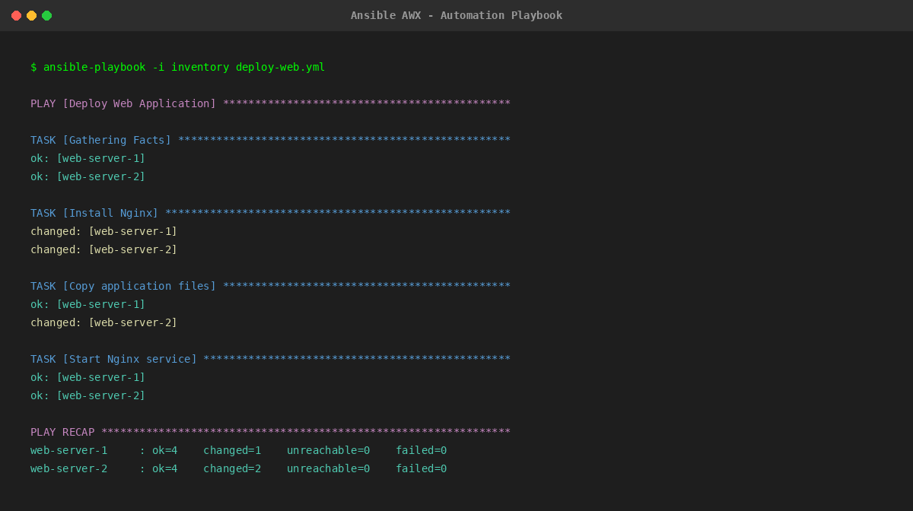
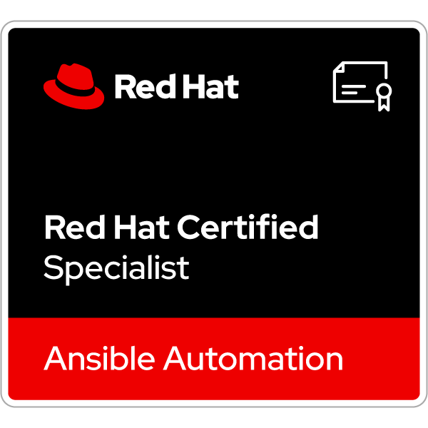

Overview
Ansible is an agentless automation tool: playbooks written in YAML connect to Linux hosts over SSH and to Windows hosts over WinRM, so nothing has to be installed on managed nodes. The ansible-core engine is free and open source. Red Hat, which is owned by IBM, sells the commercial Red Hat Ansible Automation Platform on top of it.
The platform adds automation controller (web UI, API and role-based access), Event-Driven Ansible, Ansible automation hub with certified Content Collections, automation execution environments, automation mesh, a self-service automation portal, an automation dashboard and analytics, and development tools. Its AI features are the automation coding assistant, delivered in VS Code through the Ansible extension, and the automation intelligent assistant, a chat assistant that became generally available in Ansible Automation Platform 2.6 on OpenShift.
Ansible Automation Platform is sold as a Standard (9 AM to 5 PM support) or Premium (24x7 support) subscription; Red Hat says pricing varies with sizing and asks buyers to contact sales or a partner. It is also available on AWS, Microsoft Azure, Google Cloud and Oracle Cloud Infrastructure, and Red Hat offers a no-cost 60-day trial.
Key Features
Automation Coding Assistant
Generates tasks, playbooks and roles in VS Code (formerly Ansible Lightspeed); needs a connected model provider.
YAML Playbooks
Human-readable automation that doubles as documentation.
Agentless
Uses SSH for Linux and WinRM for Windows; no agent on managed nodes.
Content Collections
Certified and validated content distributed through Ansible automation hub.
Automation Controller
Web UI and REST API to run automation at scale with role-based access control.
Event-Driven Ansible
Triggers automation automatically from events sent by monitoring and other tools.
Pros & Cons
Advantages
- Agentless: nothing to install on managed nodes
- Free open-source core (ansible-core)
- Readable YAML playbooks
- AI coding assistant included in the subscription
- Available on AWS, Azure, Google Cloud and OCI marketplaces
- No-cost 60-day trial of the full platform
Disadvantages
- No public price list for Ansible Automation Platform
- AI assistant needs a separately billed model provider
- The intelligent assistant requires AAP 2.6 on OpenShift
- Standard support covers business hours only; 24x7 needs Premium
- YAML is sensitive to indentation errors
Pricing
Pricing is quote-based. Red Hat says it varies with sizing and subscription choice; contact Red Hat or an authorized partner for a quote.
ansible-core (free)
Open-source command-line automation engine.
Standard subscription
Ansible Automation Platform with 9 AM to 5 PM support, maintenance and upgrades.
Premium subscription
Ansible Automation Platform with 24x7 support, maintenance and upgrades.
60-day trial
No-cost subscription for installation on Red Hat Enterprise Linux, including the AI coding assistant with IBM watsonx Code Assistant.
Best Use Cases
Ideal For:
- Linux and Windows server configuration and patching
- Network automation across multi-vendor devices
- Teams standardizing automation with RBAC and audit trails (automation controller)
- Event-driven remediation triggered by monitoring tools
- Red Hat Enterprise Linux and OpenShift customers
May Not Be Ideal For:
- Teams that want published per-node pricing
- Infrastructure provisioning where a declarative state tool such as Terraform fits better
- Organizations that cannot connect an external or self-hosted model for the AI features
Comparison
Ansible vs Alternatives
- vs Puppet and Chef: these use agents on managed nodes; Ansible connects over SSH or WinRM without agents.
- vs Terraform: Terraform focuses on provisioning infrastructure with tracked state; Ansible focuses on configuring systems and orchestrating tasks. Many teams use both.
- vs ansible-core alone: the free engine runs playbooks from the command line; the paid platform adds the controller, Event-Driven Ansible, certified content, AI assistants and Red Hat support.
Screenshots & Interface
Explore Ansible's automation workflow:

Frequently Asked Questions
Is Ansible free?
ansible-core is free and open source. Red Hat Ansible Automation Platform is a paid subscription with a no-cost 60-day trial.
How much does Ansible Automation Platform cost?
Red Hat does not publish prices. Standard and Premium subscriptions are quoted based on sizing.
What happened to Ansible Lightspeed?
Red Hat now calls it the automation coding assistant. It is included in the subscription but needs a model provider, billed separately.
Does Ansible need agents?
No. It connects over SSH to Linux and over WinRM to Windows.
Where can I run it?
On your own infrastructure or through AWS, Microsoft Azure, Google Cloud and Oracle Cloud Infrastructure.
Recommended Certifications
To excel in network automation with Ansible and advance your DevOps career, pursue these Red Hat certifications. Each validates critical automation and infrastructure-as-code skills.

Red Hat Ansible Automation
Automate management and deployment of systems in enterprise environments using Ansible.
RHCE (Red Hat Certified Engineer)
Advanced skills in automation, including Ansible Playbooks and system administration.
Advanced Ansible Automation
Best practices for automating large or complex networks with Ansible Automation Platform.
Final Verdict
Ansible remains one of the most approachable ways to automate servers and network devices, thanks to its agentless design and readable playbooks. The paid platform adds governance, event-driven automation and AI assistance, but pricing is quote-only and the AI features need a separately billed model provider.